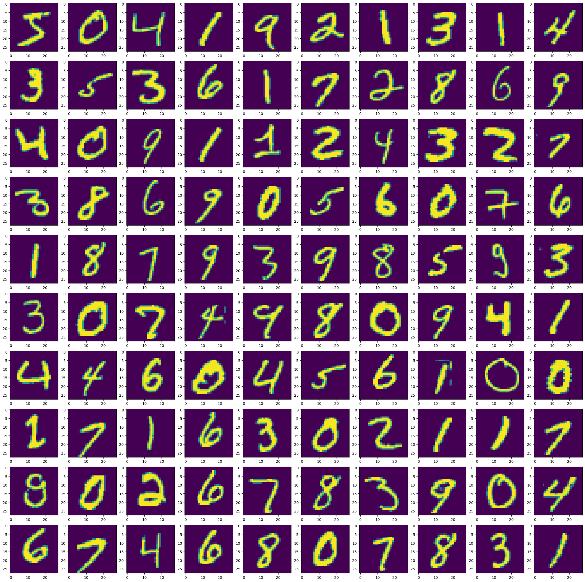
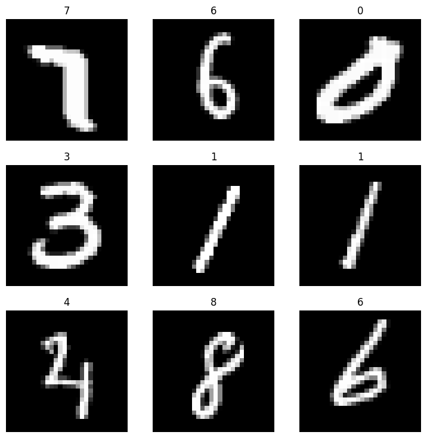

import numpy as np
import pandas as pd
import torch
from fastai.data.core import Datasets
from fastai.vision.all import *Creating DataBlock from Numpy Array
fastai
numpy
datablock
Feed list of dict into DataBlock
TLDR; Need to prepare our data into list of dictionaries for each sample, eg L([{x: feature1, y: label1}, {x: feature2, y: label2}, {x: featuren, y: labeln} ]) format and feed the function into get_image param of DataBlock.
Load data
# ref: https://www.kaggle.com/code/drkaggle22/digit-recognizer-solution-99-accuracy?scriptVersionId=181451739&cellId=3
import struct
def read_idx(filename):
with open(filename, 'rb') as f:
zero, data_type, dims= struct.unpack('>HBB', f.read(4))
shape = tuple(struct.unpack('>I', f.read(4))[0] for d in range(dims))
return np.frombuffer(f.read(), dtype=np.uint8).reshape(shape)
def load_mnist(image_path, label_path):
images = read_idx(image_path)
labels = read_idx(label_path)
return images, labels
train_image_path = '/kaggle/input/mnist-dataset/train-images-idx3-ubyte/train-images-idx3-ubyte'
train_label_path = '/kaggle/input/mnist-dataset/train-labels-idx1-ubyte/train-labels-idx1-ubyte'
test_image_path = '/kaggle/input/mnist-dataset/t10k-images-idx3-ubyte/t10k-images-idx3-ubyte'
test_label_path = '/kaggle/input/mnist-dataset/t10k-labels-idx1-ubyte/t10k-labels-idx1-ubyte'train_images, train_labels = load_mnist(train_image_path, train_label_path)
test_images, test_labels = load_mnist(test_image_path, test_label_path)
print(f'Train images shape: {train_images.shape}')
print(f'Train labels shape: {train_labels.shape}')
print(f'Test images shape: {test_images.shape}')
print(f'Test labels shape: {test_labels.shape}')Train images shape: (60000, 28, 28)
Train labels shape: (60000,)
Test images shape: (10000, 28, 28)
Test labels shape: (10000,)from collections import Counter
print(Counter(train_labels))
n_classes = len(Counter(train_labels))
print('n_classes:', n_classes)Counter({1: 6742, 7: 6265, 3: 6131, 2: 5958, 9: 5949, 0: 5923, 6: 5918, 8: 5851, 4: 5842, 5: 5421})
n_classes: 10
def tensor_to_labelled_pil_image(tensor: np.ndarray, labels=None) -> list:
''' ref: https://www.kaggle.com/code/pemtaira/digit-recognizer-fastai-v2-2020
shape image shape (total sample, height, width) into (total sample, 3, height, width),
save into dictionary (x: reshaped img, y: label). Append dictionary to list. return list.
'''
reshaped = tensor.reshape(-1, 28, 28) # (total sample, 28, 28) --> (total sample, 28, 28)
reshaped = np.stack((reshaped,) *3, axis = 1) # (total sample, 28, 28) --> (total sample, 3, 28, 28)
image_arr = []
# loop each reshaped images, convert to float tensor, convert to PILImage, save as dictionary, append to list
for idx, current_image in enumerate(reshaped):
img = torch.tensor(current_image, dtype=torch.float) / 255.
img = PILImage(to_image(img))
final_data = None
if (labels is None):
final_data = {'x': img, 'y': None}
else:
final_data = {'x': img, 'y': labels[idx]}
image_arr.append(final_data)
return image_arr
def get_image(l:list) -> L:
"""
returns list of [{'x': feature tensor, 'y': class label},
{...}, {...} ]
L is fastai's implementation of list
"""
features = l[0]
labels = l[1]
all_imgs = tensor_to_labelled_pil_image(features, labels)
return L(all_imgs)
def get_y_fromdict(item):
"""get y from each sample dictionary returned from get_image()"""
return item['y']
def get_x_fromdict(item):
"""get x from each sample dictionary returned from get_image()"""
return item['x']Initialize DataBlock
blocks=(ImageBlock(cls=PILImage), CategoryBlock) > Here we specify that our input data is an image and of class PILImage, our label is categorical
get_items=get_image > Function where we return list of {x:features, y:label} dictionary for all our samples
splitter=RandomSplitter(valid_pct=0.2, seed=42) > Describe how we want to split our data; Here we want to split train and test data into 80-20 split randomly. We specify seed to have reproducible result for each run.
get_x=get_x_fromdict > Function to extract features from list returned from get_image() function. Note, we could also use lambda function here get_x = (lambda item: item['x']).
get_y=get_y_fromdict > Function to extract label from list returned from get_image() function. Note, we could also use lambda function here get_y = (lambda item: item['y']).
Note that if we use lambda function when initializing DataBlock, we might need to use dill library to export our model.
mnist_db = DataBlock(
blocks=(ImageBlock(cls=PILImage), CategoryBlock),
get_items=get_image,
splitter=RandomSplitter(valid_pct=0.2, seed=42),
get_y=get_y_fromdict,#(lambda item: item['y']),
get_x=get_x_fromdict #(lambda item: item['x'])
)# checking featues and labels shapes
print(train_images.shape)
print(train_labels.shape)(60000, 28, 28)
(60000,)# stacking both train and test sets' features
print(train_images.shape)
print(test_images.shape)
np.vstack([train_images, test_images]).shape(60000, 28, 28)
(10000, 28, 28)(70000, 28, 28)# stacking both train and test sets
print(train_labels.shape)
print(test_labels.shape)
np.hstack([train_labels, test_labels]).shape(60000,)
(10000,)(70000,)This is how our data is reshaped in tensor_to_labelled_pil_image() function.
features = np.vstack([train_images, test_images])
features_reshaped = features.reshape(-1, 28, 28)
features_reshaped_stacked = np.stack((features_reshaped,) *3, axis = 1)
print('features.shape', features.shape)
print('features_reshaped.shape', features_reshaped.shape)
print('features_reshaped_stacked.shape', features_reshaped_stacked.shape)features.shape (70000, 28, 28)
features_reshaped.shape (70000, 28, 28)
features_reshaped_stacked.shape (70000, 3, 28, 28)Quick plot
# ref: https://stackoverflow.com/a/59296746
import matplotlib.pyplot as plt
fig, axes = plt.subplots(10,10, figsize=(28,28))
for i,ax in enumerate(axes.flat):
ax.imshow(features_reshaped[i])
Load our source data
dls = mnist_db.dataloaders([np.vstack([train_images, test_images]),
np.hstack([train_labels, test_labels])])dls.show_batch()
Train model
learn = vision_learner(dls, resnet18, metrics=[error_rate, accuracy])
learn.fine_tune(10)Downloading: "https://download.pytorch.org/models/resnet18-f37072fd.pth" to /root/.cache/torch/hub/checkpoints/resnet18-f37072fd.pth
100%|██████████| 44.7M/44.7M [00:00<00:00, 146MB/s]| epoch | train_loss | valid_loss | error_rate | accuracy | time |
|---|---|---|---|---|---|
| 0 | 0.714643 | 0.483854 | 0.155143 | 0.844857 | 04:06 |
90.00% [9/10 1:10:59<07:53]
| epoch | train_loss | valid_loss | error_rate | accuracy | time |
|---|---|---|---|---|---|
| 0 | 0.170800 | 0.091101 | 0.026429 | 0.973571 | 08:18 |
| 1 | 0.098211 | 0.057546 | 0.018071 | 0.981929 | 07:50 |
| 2 | 0.070756 | 0.043570 | 0.013071 | 0.986929 | 07:54 |
| 3 | 0.045105 | 0.036998 | 0.010214 | 0.989786 | 07:51 |
| 4 | 0.034318 | 0.037484 | 0.010214 | 0.989786 | 07:51 |
| 5 | 0.032253 | 0.031844 | 0.007857 | 0.992143 | 07:49 |
| 6 | 0.013959 | 0.029695 | 0.006714 | 0.993286 | 07:47 |
| 7 | 0.006643 | 0.028861 | 0.006643 | 0.993357 | 07:48 |
| 8 | 0.002887 | 0.027575 | 0.006143 | 0.993857 | 07:48 |
22.83% [50/219 00:06<00:21 0.0014]
IOPub message rate exceeded.
The notebook server will temporarily stop sending output
to the client in order to avoid crashing it.
To change this limit, set the config variable
`--NotebookApp.iopub_msg_rate_limit`.
Current values:
NotebookApp.iopub_msg_rate_limit=1000.0 (msgs/sec)
NotebookApp.rate_limit_window=3.0 (secs)
Save model
learn.export('model2.pkl')If we use lambda function when initializing DataBlock, we can use dill to save model. Eg:
import dill
learn.export('model2.pkl', pickle_module=dill)